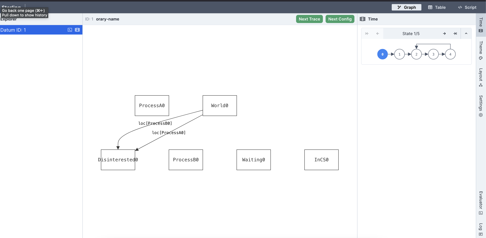
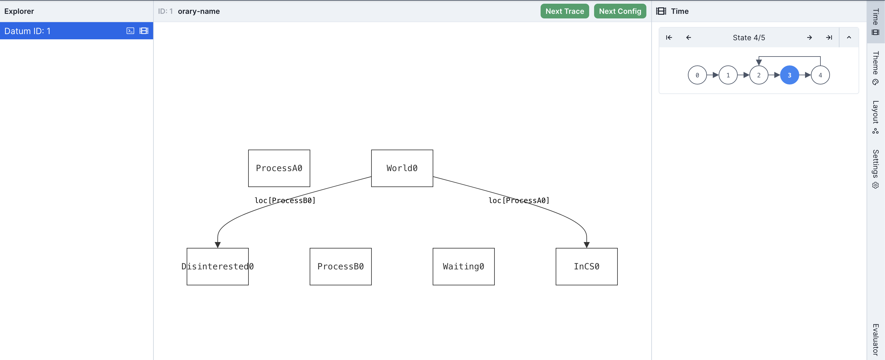

Temporal Forge¶
LTL Tutor
We recommend pairing this chapter with exercises in Brown PLT's LTLTutor.
To best align with this textbook, make sure to switch to (Forge Syntax) in the Dashboard.
Temporal Forge works by adding additional operators to the language. You can still do everything you could before (with one exception that we'll get to) in Relational Forge, but you get new operators—new operators like always and eventually—that make describing properties and specifying systems easier. Moreover, these operators are standard in industrial model-checking tools.
Temporal Forge takes away the need for you to explicitly model traces, and gives some convenient syntax for describing what can change over time. But there is something to watch out for: Temporal Forge forces the engine to only ever find lasso traces. It's very convenient if that's what you want, but don't use it if you don't want a lasso trace!
Example: Integer Counter¶
Here's a quick example that motivates how Temporal Forge works, and some pitfalls that can occur when you use it. Suppose that we're modeling a system with a single integer counter:
#lang forge/temporal
-- enable traces of up to length 10
option max_tracelength 10
one sig Counter {
-- The value of the "counter" field may vary over time.
var counter: one Int
}
run {
-- Temporal-mode formulas are interpreted from an implicit current time. By default,
-- we're talking about the start of the trace. So, the counter starts at 0.
Counter.counter = 0
-- `always` means "now and at every time in the future". The prime (') operator
-- says "value in the next state". So this means that the counter is incremented
-- with every transition:
always Counter.counter' = add[Counter.counter, 1]
} for 3 Int
First, notice that we didn't need to define the structure of a trace. We got that for free by using Temporal Forge, which only ever finds traces.
Second, this is satisfiable, as we might expect. But what happens if you change the bound on Int to for 4 Int?
Exercise: Try it. What happens? Why do you think it did happen?
Think, then click!
It's unsatisfiable with the new bound. This is strange: usually when we increase the scope on a sig, without using the exactly keyword, we only ever make something satisfiable (because we're increasing the possible sizes of instance that Forge checks).
The problem is that, because only lasso traces are found, Forge can only satisfy this model by exploiting integer overflow. At 3 Int, which supports values between -4 and 3, the counter progresses like this: 0, 1, 2, 3, (overflow to) -4, -3, -2, -1, 0 and so on. We have 10 states to work with, which is enough to wrap around back to 0.
In contrast, at 4 Int, the values range from -8 to 7. Overflow will happen as normal, but only when moving from 7 to -8. The 10 states we have won't be enough to actually loop back around to 0—and there must be a loop somewhere in a lasso trace. So Temporal Forge says that the model is unsatisfiable at trace length 10, for 4 Int.
Converting to Temporal Forge¶
Let's convert the mutual-exclusion model into Temporal Forge. We'll add the necessary options first:
Option Names
Be sure to include the underscore! Misspellings like maxtracelength aren't a valid option name.
Now we'll update the data definitions. We no longer have a State sig. Or rather, we do, but we would only have one of them and let its fields vary with time. Because both the flags and loc fields change over time, we'll make both of them var, and we'll change the name of State to avoid confusion:
At any moment in time, every thread is in exactly one location. And, at any moment in time, each thread has either raised or lowered its flag.
Now for the predicates. In Temporal Forge, we don't have the ability to talk about specific pre- and post-states: the language handles the structure of traces for us. This means we have to change the types of our predicates. For init, we have:
-- No argument! Temporal mode is implicitly aware of time
pred init {
all p: Process | World.loc[p] = Uninterested
no World.flags
}
The loss of a State sig is perhaps disorienting. How does Forge evaluate init without knowing which state we're looking at? In Temporal Forge, every constraint is evaluated not just in an instance, but in that instance at some moment in time. You don't need to explicitly mention the moment. So the formula no World.flags is true exactly when, at the current time, there's no flags raised. Using init is like saying "are we in an initial state right now?"
Similarly, we'll need to change our transition predicates:
-- Only one argument; same reason as above
pred raise[p: Process] {
// pre.loc[p] = Uninterested
// post.loc[p] = Waiting
// post.flags = pre.flags + p
// all p2: Process - p | post.loc[p2] = pre.loc[p2]
// GUARD
World.loc[p] = Uninterested
// ACTION
World.loc'[p] = Waiting
World.flags' = World.flags + p
all p2: Process - p | World.loc'[p2] = World.loc[p2]
}
I've left the old version commented out so you can contrast the two. Again, the predicate is true subject to an implicit moment in time.
The Prime Operator (')¶
The priming (') operator means "this expression in the next state"; so if raise holds at some point in time, it means there is a specific relationship between the current and next moments.
We'll convert the other predicates similarly, and then run the model:
run {
-- start in an initial state
init
-- in every state of the lasso, the next state is defined by the transition predicate
always {some t: Thread | raise[t] or enter[t] or leave[t]}
}
This is the general shape of things! There are still some potential problems remaining, but we'll get to them shortly. First, we need to talk about how to view a Temporal Forge instance.
Running A Temporal Model¶
When we run, we get something that looks like this:

New Buttons!¶
In temporal mode, Sterling has 2 "next" buttons, rather than just one.
* The "Next Trace" button will hold all non-var relations constant, but ask for a new trace that varies the var relations.
* The "Next Config" button forces the non-var relations to differ.
Having different buttons for these two ideas is useful, since otherwise Forge is free to change the value of any relation, even if it's not what you want changed.
Trace Minimap¶
In Temporal Forge, Sterling shows a "mini-map" of the trace in the "Time" tab. You can see the number of states in the trace, as well as where the lasso loops back.
It will always be a lasso, because Temporal Forge never finds anything but lassos.
You can use the navigation arrows, or click on specific states to move the visualization to that state:

Theming works as normal, as do custom visualizers (although read the documentation if you're writing your own visualizer; there are some small changes like using instances instead of instance to access data).
So what's missing?¶
Do not try to use example in temporal mode. The example and inst constructs define bounds for all states at once in Temporal forge. While inst can still be very useful for optimization, example will prevent anything it binds from ever changing in the trace, which isn't very useful for test cases. Instead, use constraints.